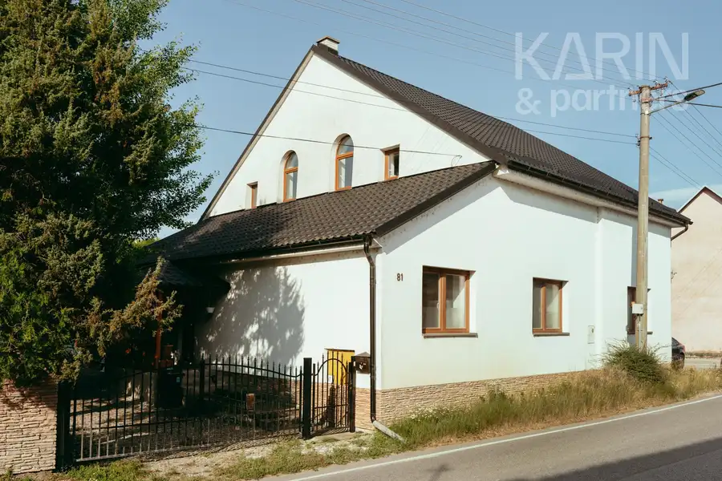
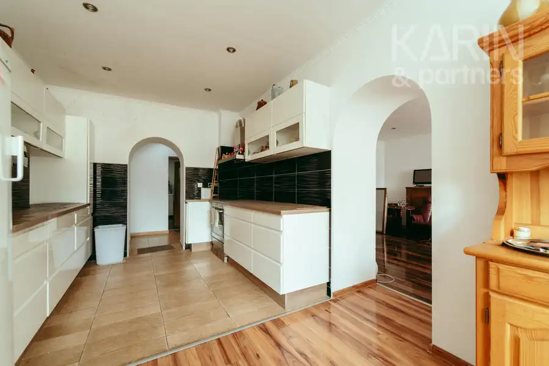
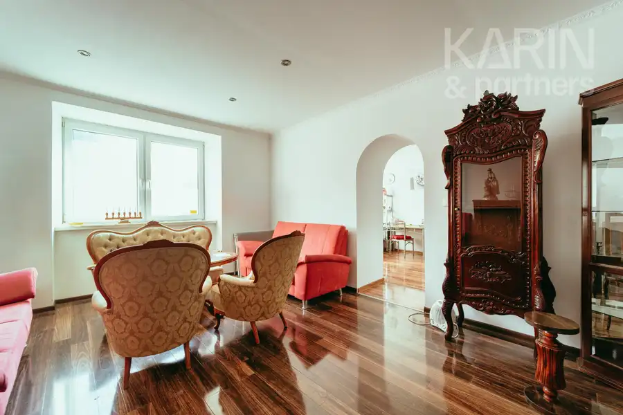
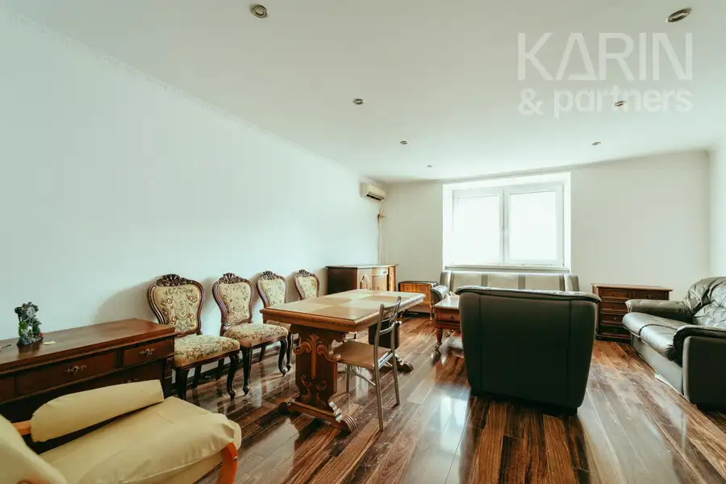
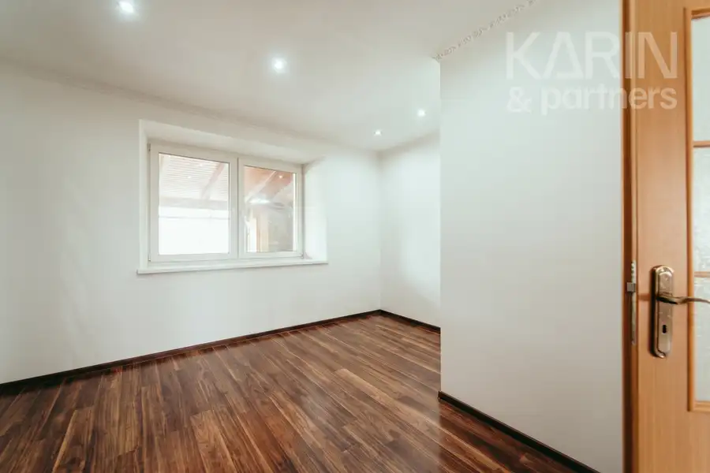
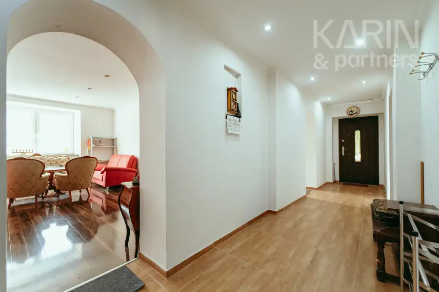
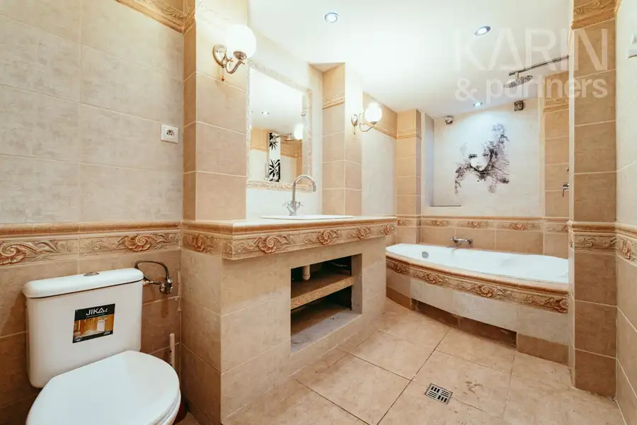
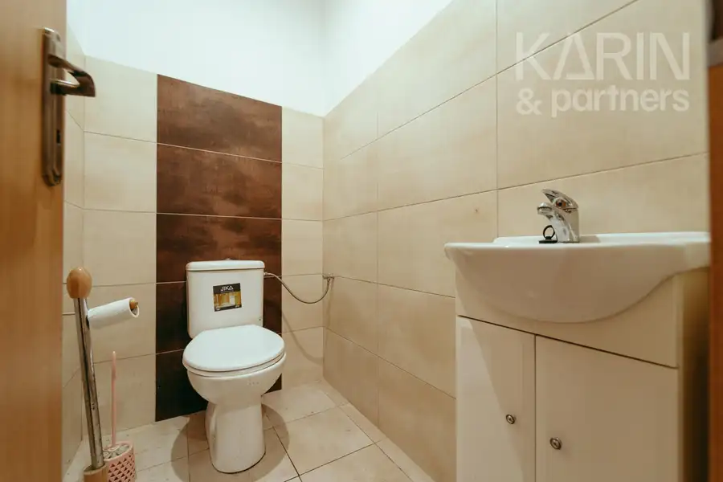

Veľkorysý RD po rekonštrukcii s pozemkom a priestorom pre bývanie aj podnikanie
Myjava








- Plocha250 m²
- StavČiastočná rekonštrukcia
- VlastníctvoFiremné
O nehnuteľnosti
ideálne pre dvojgeneračné bývanie aj podnikanie | rozsiahla rekonštrukcia | rozľahlý pozemok | veľká zastrešená terasa | hospodárska budovaNie každý dom ponúka priestor, ktorý sa dokáže prispôsobiť vašim plánom. Tento áno.Realitná kancelária KARIN & PARTNERS vám ponúka na predaj priestranný rodinný dom po rozsiahlej rekonštrukcii, ktorý ponúka oveľa viac než len komfortné bývanie. Táto nehnuteľnosť osloví každého, kto hľadá priestor, súkromie a možnosti. Či už túžite po veľkom rodinnom dome, dvojgeneračnom bývaní, alebo chcete spojiť bývanie s podnikaním, tento dom sa dokáže prispôsobiť vašim plánom.DOMRodinný dom prešiel rozsiahlou rekonštrukciou v roku 2020 a ponúka približne 250 m² úžitkovej plochy, ktorá je rozdelená na dve funkčné podlažia. Celý dom je navyše podpivničený, čo poskytuje množstvo úložného priestoru, technické zázemie alebo priestor pre dielňu či domáce hobby.Prízemie tvorí plnohodnotná obytná časť pozostávajúca zo štyroch izieb, šatníka, priestrannej kuchyne, kúpeľne s rohovou vaňou, samostatného WC a vstupnej chodby. Z chodby vedie masívne drevené schodisko na poschodie aj na veľkú zastrešenú terasu orientovanú do záhrady.Horné podlažie predstavuje veľkorysý otvorený priestor s vlastnou kúpeľňou a kuchynským kútom. Novému majiteľovi ponúka široké možnosti využitia – môže slúžiť ako samostatný apartmán pre rodičov alebo dospelé deti, reprezentatívny pracovný priestor, ateliér, domáca kancelária či komfortná oddychová zóna.Dispozícia domu ponúka výnimočnú flexibilitu. V minulosti bola nehnuteľnosť využívaná aj ako firemné sídlo, čo potvrdzuje jej potenciál na spojenie komfortného bývania s podnikateľskou činnosťou. Vďaka samostatným a veľkorysým priestorom môže nový majiteľ dom jednoducho prispôsobiť svojim potrebám bez zásadných stavebných úprav.Technické vybavenie: Dom je napojený na verejný vodovod a kanalizáciu. Vykurovanie zabezpečuje kotol na pelety, ohrev vody elektrický bojler. K dispozícii je klimatizácia a plynová prípojka.EXTERIÉRVeľkou prednosťou tejto nehnuteľnosti je jej exteriér, ktorý ponúka nielen dostatok priestoru na oddych, ale aj praktické využitie. Dominantou je priestranná zastrešená terasa, ktorá prirodzene prepája interiér so záhradou a vytvára ideálne miesto na rodinné stretnutia, letné posedenia či príjemné chvíle s priateľmi.Na pozemku sa nachádza samostatná hospodárska budova rozdelená na päť miestností, ktorá poskytuje zázemie pre dielňu, skladovanie, hobby alebo podnikateľské aktivity.Rovinatý pozemok s výmerou 1327 m² ponúka dostatok priestoru na oddych, záhradkárčenie, detské ihrisko, bazén alebo ďalšie úpravy podľa predstáv nového majiteľa. Zadná časť záhrady prirodzene nadväzuje na zeleň a potôčik, vďaka čomu ponúka príjemné súkromie a pokoj.PARKOVANIESamozrejmosťou je parkovanie priamo vo dvore, ktoré zabezpečuje súkromie aj bezpečné odstavenie viacerých vozidiel. Ďalšie parkovacie možnosti sa nachádzajú bezprostredne za domom, čo oceníte pri rodinných oslavách, návštevách alebo v prípade podnikateľského využitia nehnuteľnosti.MOŽNOSTI VYUŽITIAKomfortné bývanie pre väčšiu alebo viacgeneračnú rodinu.Spojenie bývania s podnikaním bez nutnosti prenajímať ďalšie priestory.Sídlo firmy s reprezentatívnym zázemím.Ateliér, architektonické alebo projektové štúdio.Ambulancia, poradenské či terapeutické centrum (v závislosti od povoleného využitia).Dom s priestorom na remeselnú činnosť alebo hobby.LOKALITATurá Lúka patrí medzi vyhľadávané časti Myjavy pre pokojné bývanie v blízkosti prírody a zároveň s dobrou občianskou vybavenosťou. V blízkosti sa nachádza materská škola, základná škola, potraviny, autobusová zastávka aj ďalšie služby. Okolie ponúka množstvo možností na turistiku, cykloturistiku a aktívny oddych.VÝMERAZastavaná plocha domu: 184 m²Úžitková plocha domu: 250 m²Zastavaná plocha hospodárskej budovy: 109 m²Rozloha pozemku: 1327 m²CENA ZA DOM295 000 €V cene sú zahrnuté služby RK: Komplexný právny servis – vypracovanie všetkých druhov zmlúv potrebných k predaju, poplatok za overenie podpisov na kúpnych zmluvách, správny poplatok za vklad do katastra nehnuteľností a odovzdanie nehnuteľnosti.Pre našich klientov poskytujeme osobný a profesionálny prístup pri predaji, rýchlosť a znalosť trhu. Pomôžeme Vám s predajom, prenájmom alebo kúpou Vašej novej nehnuteľnosti. Zároveň vieme sprostredkovať finančné služby v oblasti hypoték. V prípade vážneho záujmu ma neváhajte kontaktovať.Fotografie a text sú autorským dielom spoločnosti KARIN & PARTNERS. V prípade viacerých záujemcov si majiteľ vyhradzuje právo zvoliť najvýhodnejšiu ponuku.KONTAKT K OBHLIADKEIng. ZUZANA MARTONČlen Realitnej únie Slovenskej republiky+421 905 148 714marton@karinpartners.sk
Parametre
- Druh
- Rodinný dom
- Dátum zverejnenia
- 02. 08. 2026
- Plocha pozemku
- 1639 m²
- Počet izieb / miestností
- 4
- Počet nadzemných podlaží
- 1
- Počet pivníc
- 1
- Rok poslednej rekonštrukcie
- 2020
- Stav nehnuteľnosti
- Čiastočná rekonštrukcia
- Terás
- 1
- Terén pozemku
- Rovinatý
- Typ
- Predaj
- Typ konštrukcie
- Tehlová
- Vlastníctvo
- Firemné
- Vybavenie
- Terasa, Pivnica, Verejné parkovanie, Sklad, Technická miestnosť
- Zariadenie
- Zariadené kompletne
- Zastavaná plocha
- 184 m²
- Úžitková plocha
- 250 m²